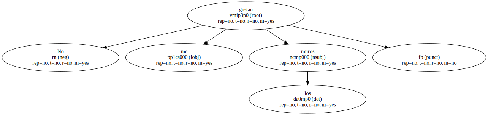
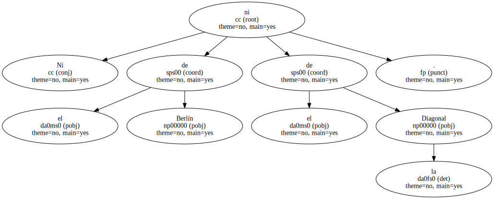
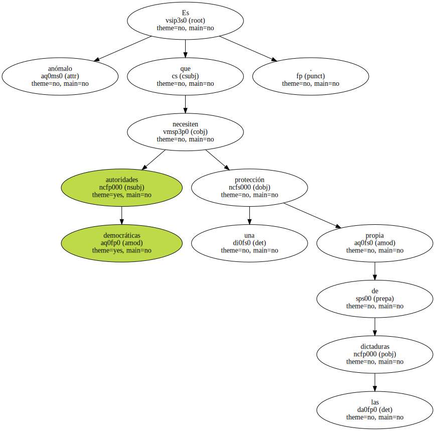
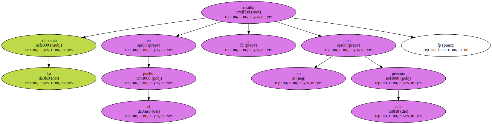
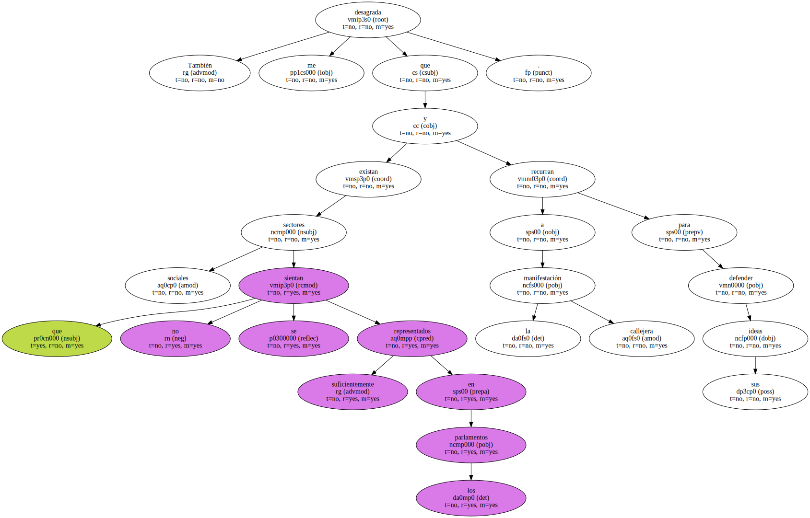
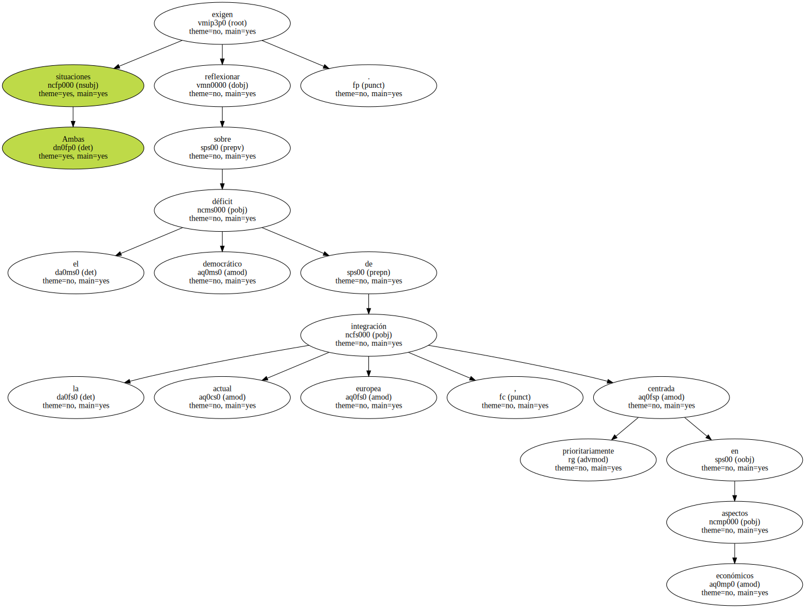
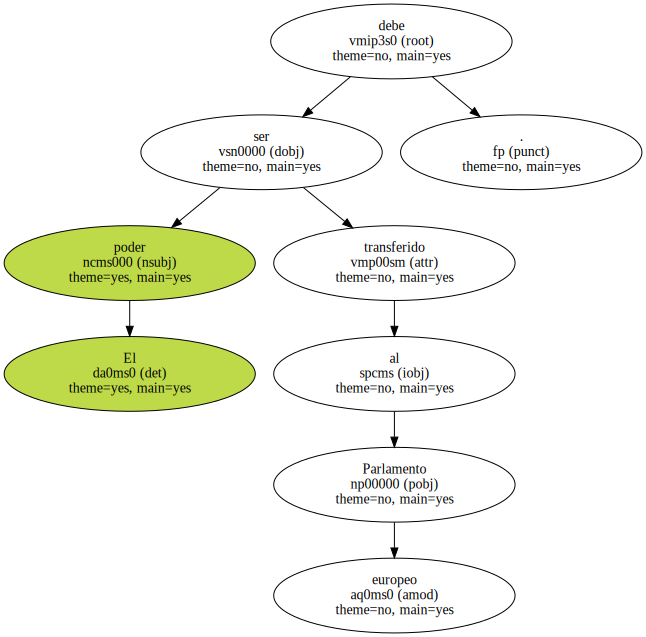

No me gustan los muros.
Ni el de Berlín ni el de la Diagonal.
Es anómalo que autoridades democráticas necesiten una protección propia de las dictaduras.
Bajo el franquismo envidiábamos a los dirigentes que viajaban en metro y paseaban como los otros ciudadanos.

La soberanía residía en el pueblo , no en una persona.
También me desagrada que existan sectores sociales que no se sientan suficientemente representados en los parlamentos y recurran a la manifestación callejera para defender sus ideas.
Ambas situaciones exigen reflexionar sobre el déficit democrático de la actual integración europea , centrada prioritariamente en aspectos económicos.
El poder debe ser transferido al Parlamento europeo.
